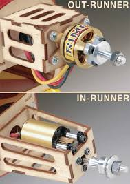
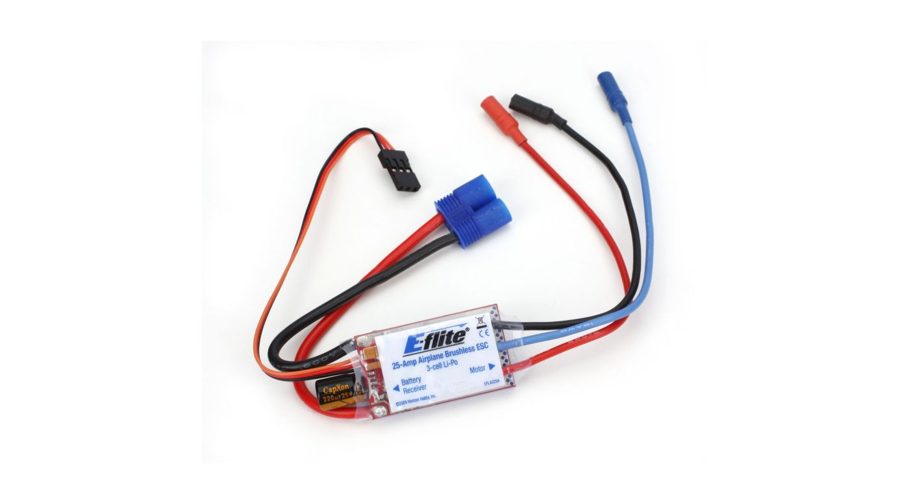
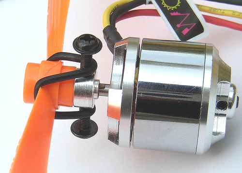

By Yash Sherry
A DC Brushless Motor uses a permanent magnet external rotor, three phases of driving coils, one or more Hall effect devices to sense the position of the rotor, and the associated drive electronics. The coils are activated, one phase after the other, by the drive electronics as cued by the signals from the Hall effect sensors, they act as three-phase synchronous motors containing their own variable frequency drive electronics.
Rated Output Power: This refers to, with the combination of motor and driver, the amount of work that can be performed by a motor in a given period of time. It also expresses the maximum output that can be produced continuously. Maximum Input Current: This refers to, with the combination of motor and driver, the maximum current sent into the driver. Rated Torque: This refers to, with the combination of motor and driver, the maximum torque created when they are in continuous operation. Starting Torque: This refers to, with the combination of motor and driver, the limit of torque that can be generated instantaneously. Permissible Load Inertia: This refers to, with the combination of motor and driver, the maximum load inertia that can be driven. The permissible load specified here is applicable only to round shaft type. Rated Speed: This refers to, with the combination of motor and driver, the maximum (limit) speed. It is the speed at rated output. Variable Speed Range: This refers to, with the combination of motor and driver, the range of variable speed. Speed Regulation: This shows how much the speed is affected by the change in load, voltage and temperature.
Sensored and sensorless are two types of brushless motors. Sensored motors have a separate sensor, and an additional five wires, that tells the controller which direction and how fast the motor is turning. These are more complicated, more expensive, and difficult to reverse. SensorLESS motors use the fact that when a motor is coasting, it’s generating electricity to see which direction and how fast the motor is turning. Knowing this information is crucial to making the motor turn in the correct direction, and knowing which two wires to pass current through at any given time to keep it turning in that direction.
There are three wires coming from a brushless motor. Inside, all three wires are connected, and wound such that passing DC current through any two connections will create a magnetic field, making the rotor turn a partial revolution. The computerized electronic speed control “commutates” a brushless motor by switching which two wires are being energized in a sequence.
Outrunners generaly have more torque, run cooler and can swing a bigger prop, and inrunners have higher rpm and normaly run a small prop or use a gearbox. Internally outrunners the magnets are on the outside while the coils are in the inside, and inrunners the coils are on the outside while the magnets are in the inside.
For preference its really whether you want to swing a smaller prop on a fast plane, or swing a big prop on a slower plane.
An electronic speed control or ESC is an electronic circuit with the purpose to vary an electric motor’s speed, its direction and possibly also to act as a dynamic brake. ESCs are often used on electrically powered radio controlled models, with the variety most often used forbrushless motors essentially providing an electronically generated three-phase electric power low voltage source of energy for the motor. ESC systems for brushed motors are very different by design; as a result brushed ESC’s are not compatible with brushless motors. Brushless ESC systems basically drive tri-phase brushless motors by sending a sequence of signals for rotation. The correct phase varies with the motor rotation, which is to be taken into account by the ESC: Usually, back EMF from the motor is used to detect this rotation, but variations exist that use magnetic (Hall Effect) or optical detectors. Computer-programmable speed controls generally have user-specified options which allow setting low voltage cut-off limits, timing, acceleration, braking and direction of rotation. Reversing the motor’s direction may also be accomplished by switching any two of the three leads from the ESC to the motor.
ESCs are normally rated according to maximum current, for example, 25 amperes or 25 A. Generally the higher the rating, the larger and heavier the ESC tends to be which is a factor when calculating mass and balance in airplanes. Many modern ESCs support nickel metal hydride, lithium ion polymer and lithium iron phosphate batteries with a range of input and cut-off voltages. The type of battery and number of cells connected is an important consideration when choosing a Battery eliminator circuit (BEC), whether built into the controller or as a stand-alone unit. A higher number of cells connected will result in a reduced power rating and therefore a lower number of servos supported by an integrated BEC, if it uses a linear voltage regulator. A well designed BEC using a switching regulator should not have a similar limitation.
Used to save the propeller from damaging itself and the motor when there is an unexpected crash of the place. The elastic band reduces the recoil.
Wikipedia – https://en.wikipedia.org/wiki/Brushless_DC_electric_motor http://electronicdesign.com/electromechanical/what-s-difference-between-brush-dc-and-brushless-dc-motors